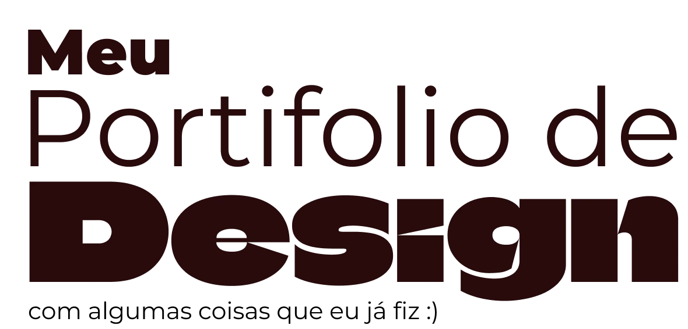
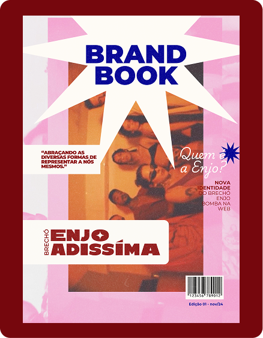
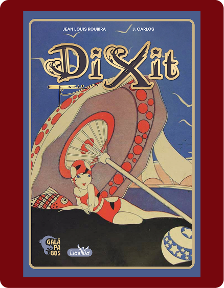
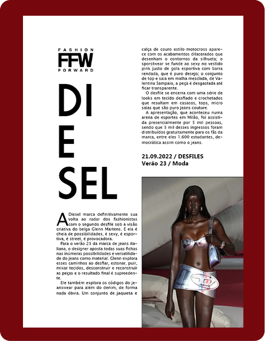

Meet the
Designer
Oie, sou Larissa Nascimento, Designer com experiência em editorial e que desbrava os caminhos do UI/UI.
Amo ler e fazer colagens, e também pensar que se tivermos criatividade as possibilidades são infinitas!!
Portifolio



Indicação de
musica
Da uma olhadinha na minha playlist, e nas musicas que eu uso para me inspirar no dia a dia SZ
PLAYLIST AQUI!